Газовоз
Масштабный макет газовоза, который должен буквально «выезжать» из существующего выставочного павильона Сахалинской области на Восточном экономическом форуме.
ВЭФ · год уточняем
Задача
Заказчик попросил построить газовоз, который должен стать частью существующего выставочного павильона острова Сахалин и визуально «выезжать» из него.
Задача оказалась на стыке декораций, инженерии и выставочного производства.
И мы приступили.
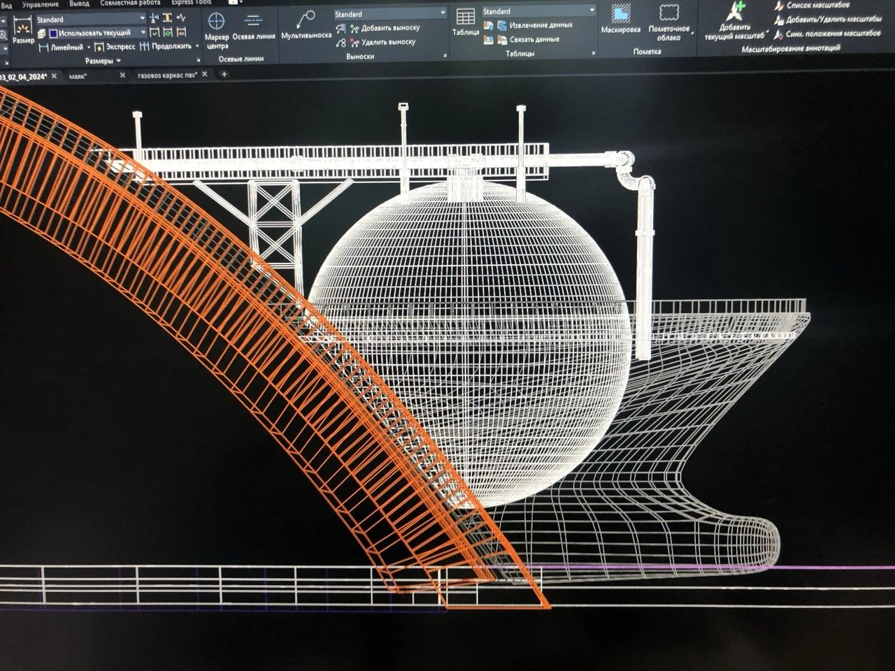
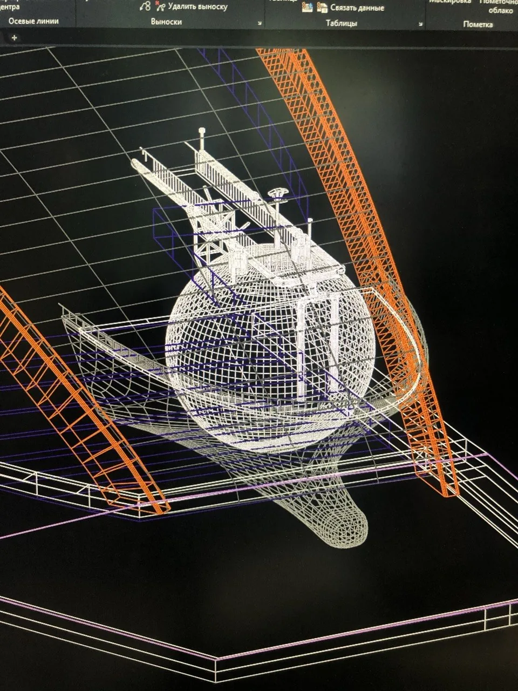
От идеи — к конструкции
Сначала был разработан 3D-проект и создана конструкторская документация.
Несущий каркас вырезали на ЧПУ-фрезере из фанеры, собрали и обшили тонкой листовой фанерой. Постепенно набор плоских деталей превратился в объёмный корпус корабля.
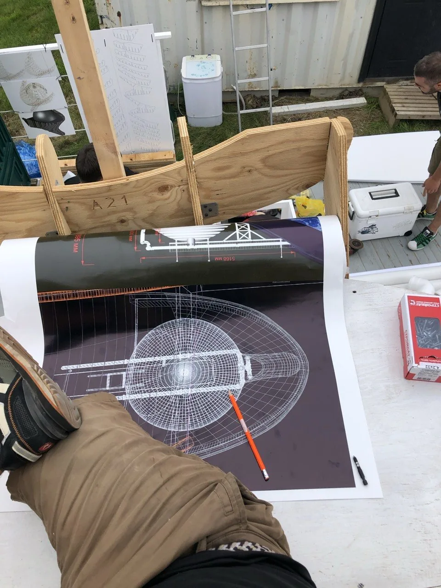
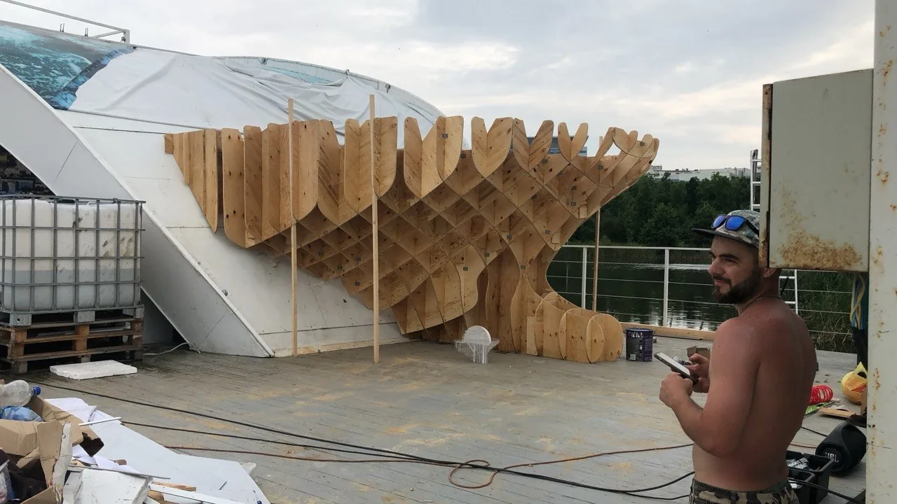
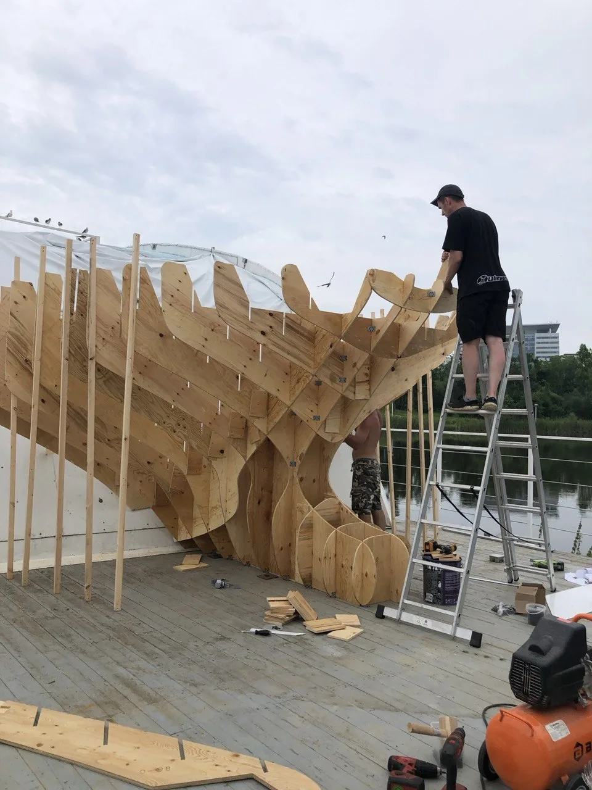
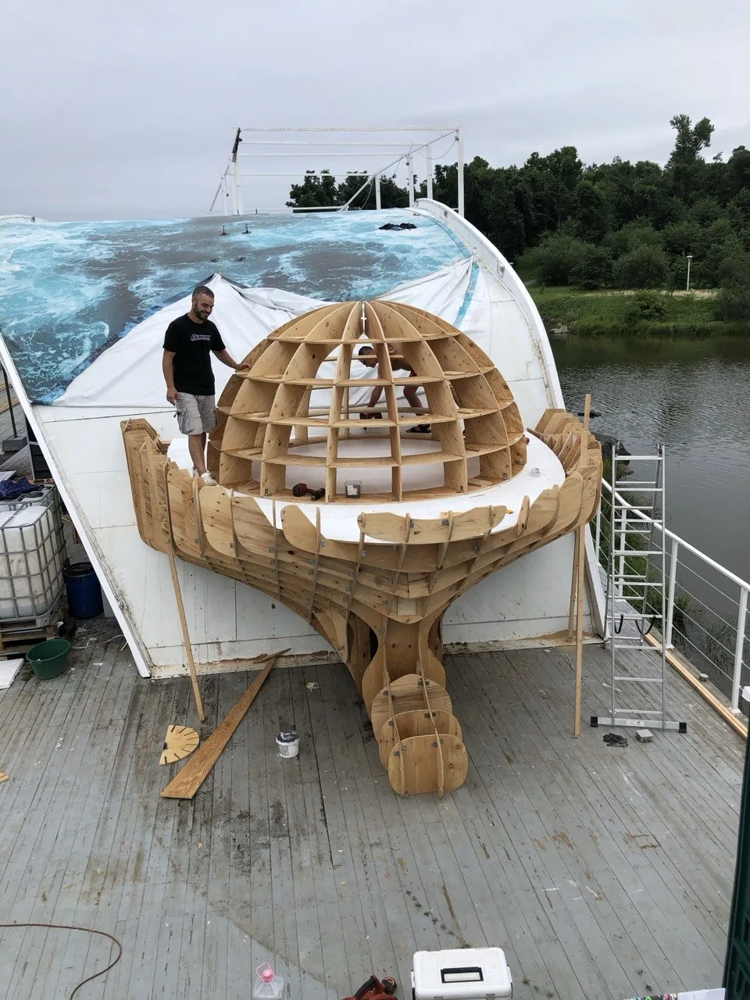
Наша маленькая судоверфь
Работа велась почти как на настоящей судостроительной верфи — под открытым небом.
Мы скользили между лучами палящего солнца и каплями проливного дождя, чтобы успеть в срок.
После обшивки корпус получил уличную влагостойкую отделку: штукатурку, шпатлёвку и покраску.
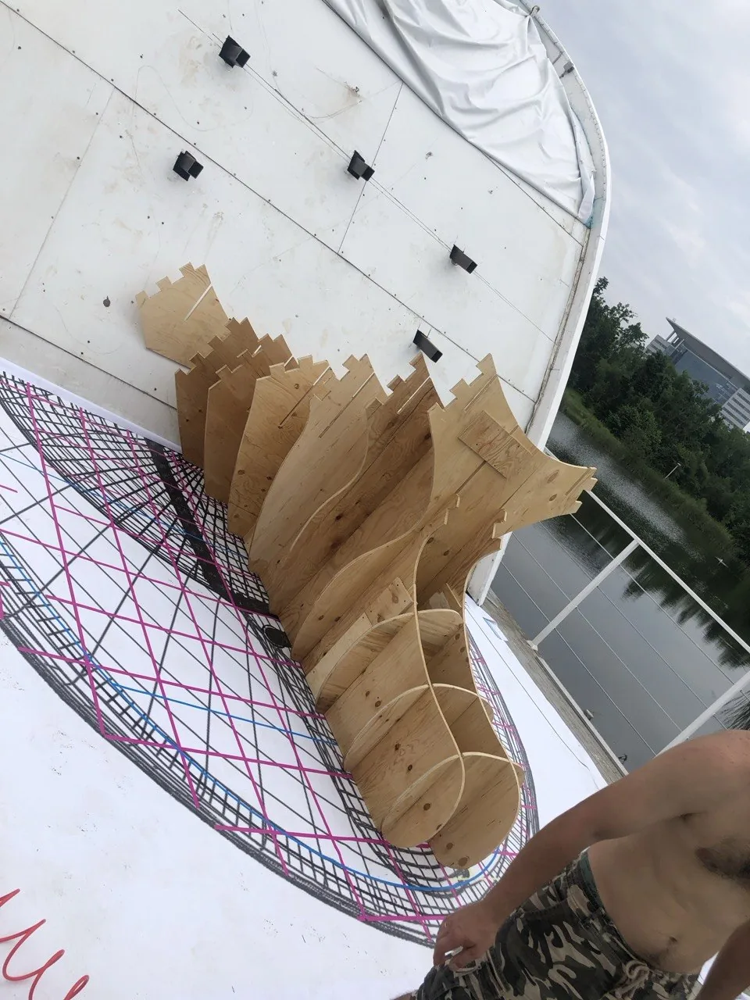
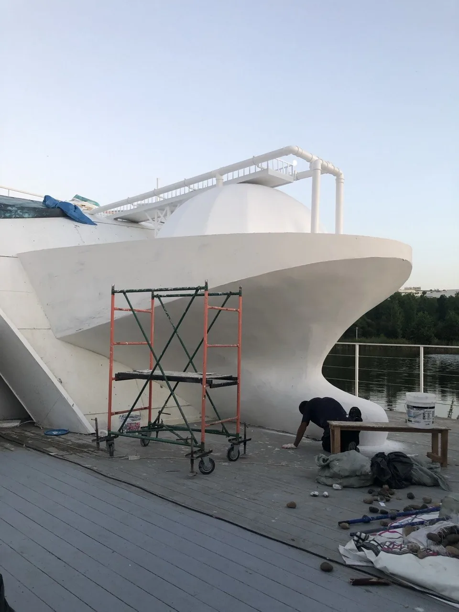
Волнорез, который пришлось вылепить
Отдельным интересным этапом стало создание волнореза в основании корабля.
Его буквально вылепили из ПСБС: форму вытачивали и сглаживали самодельным термоножом из нихромовой струны, постепенно формируя пластику волн.
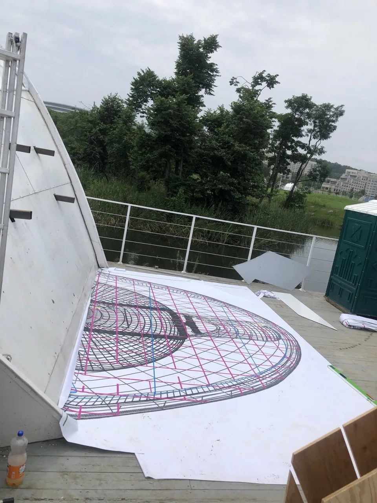
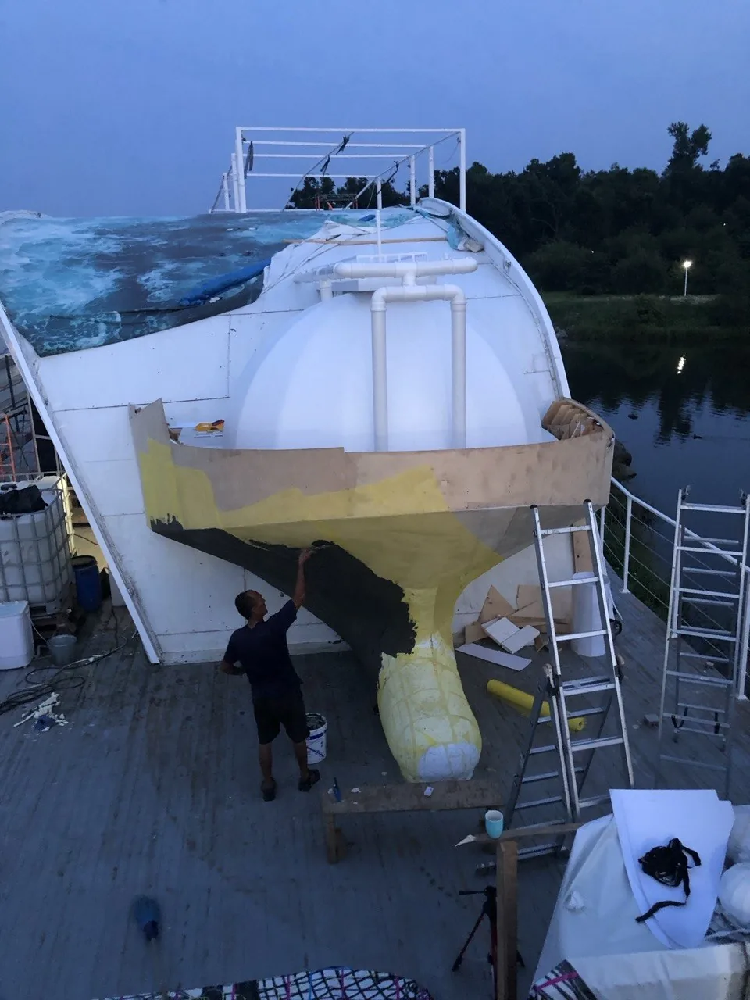
Результат
Из цифровой модели, листов фанеры и пенополистирола вырос большой выставочный объект, который стал частью архитектуры павильона и создавал иллюзию газовоза, выходящего прямо из здания.
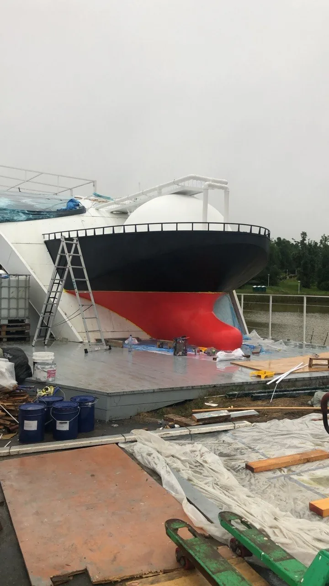